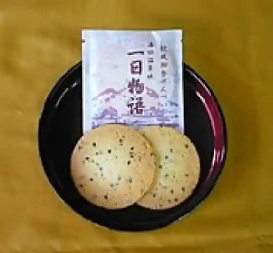
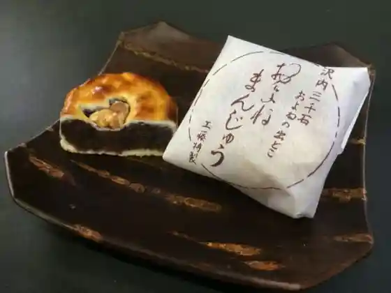
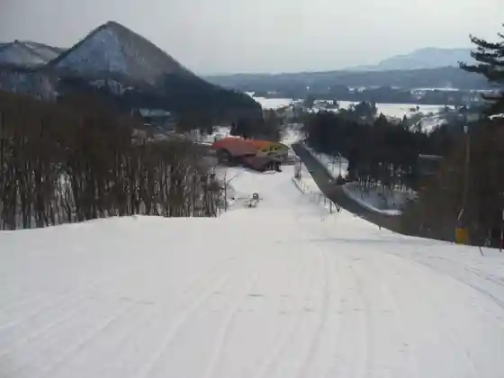

Shiga Rai Campground
Nishiwaga, Iwate · 0197-85-2601 · Official / source link

Meika Tsuitachi Monogatari
Nishiwaga, Iwate · 0197-84-2917 · Official / source link

Oyonemanju
Nishiwaga, Iwate · 0197-84-2606 · Official / source link

Shiga Rai Ski Area
Nishiwaga, Iwate · 0197-85-2914 · Official / source link

Choei Yuda Ski Area
Nishiwaga, Iwate · 0197-82-2410 · Official / source link
Nishiwaga Yumoto Okunai Onsen Puru
Nishiwaga, Iwate · 0197-82-3794 · Official / source link
Tsukizawa Warabi Sono
Nishiwaga, Iwate · 0197-84-2705 · Official / source link
Sawauchi Baden
Nishiwaga, Iwate · 0197-85-2601 · Official / source link
Ushi Baths (Higaeri Nyuyoku Shisetsu)
Nishiwaga, Iwate · 0197-82-3790 · Official / source link
Yaki Chi Dai Koen Campground
Nishiwaga, Iwate · 0197-82-3790 · Official / source link
Furusato Hausu
Nishiwaga, Iwate · 0197-85-5441 · Official / source link
Highlands Fureai Sanchoku Hausu
Nishiwaga, Iwate · 0197-85-5488 · Official / source link
Hiru Yama Mizubasho Gunsei Chi
Nishiwaga, Iwate · 0197-82-3290 · Official / source link
Nishiwaga Katakuri Jisei Chi
Nishiwaga, Iwate · 0197-82-3290 · Official / source link
Sawauchi Tennen Warabi Sono
Nishiwaga, Iwate · 0197-85-5232 · Official / source link
Hidari Kusa Zazenso Gunsei Chi
Nishiwaga, Iwate · 0197-82-3290 · Official / source link
Suppon
Nishiwaga, Iwate · 0197-82-2211 · Official / source link
Waga Gaku
Nishiwaga, Iwate · 0197-82-3290 · Official / source link
Mahiru Gaku
Nishiwaga, Iwate · 0197-82-3290 · Official / source link
Haru no Sanyaso
Nishiwaga, Iwate · 0197-82-3290 · Official / source link
Benten Shima
Nishiwaga, Iwate · 0197-82-3290 · Official / source link
Sakamoto Shrine Kagura Hono
Nishiwaga, Iwate · 0197-82-3290 · Official / source link
Oyone Jizo Mikoto
Nishiwaga, Iwate · 0197-85-2350 · Official / source link
Nagamine Koen Rifuresshuzon
Nishiwaga, Iwate · 0197-82-2800 · Official / source link
Kinshu Kosen Shiri General Park Ayame Sono
Nishiwaga, Iwate · 0197-81-1135 · Official / source link
Yudaonsen Kyo Prefectural Nature Park
Nishiwaga, Iwate · 0197-81-1135 · Official / source link
Yuda Chosa Dam
Nishiwaga, Iwate · 0197-82-3290 · Official / source link
Roadside Station (Kinshu Mizumi)
Nishiwaga, Iwate · 0197-84-2990 · Official / source link
Nishiwaga Folk History Museum
Nishiwaga, Iwate · 0197-82-3240 · Official / source link
Nishiwaga Tachikawa Village Art Museum Dessan Kan
Nishiwaga, Iwate · 0197-82-3240 · Official / source link
Kinshu Mizumi
Nishiwaga, Iwate · 0197-81-1135 · Official / source link
Yukawa Numa no Fu Shima (Ken Shitei Tennenkinembutsu)
Nishiwaga, Iwate · 0197-82-3290 · Official / source link
Minamimoto Nai Gaku
Nishiwaga, Iwate · 0197-82-3290 · Official / source link
Shiraki Toge
Nishiwaga, Iwate · 0197-82-3290 · Official / source link
Shiki Line to Shiki no Kuhi
Nishiwaga, Iwate · 0197-82-3290 · Official / source link
Fukazawa Sei Osu Museum
Nishiwaga, Iwate · 090-5180-6620 · Official / source link
Heki Sho Tera Museum
Nishiwaga, Iwate · 0197-85-3330 · Official / source link